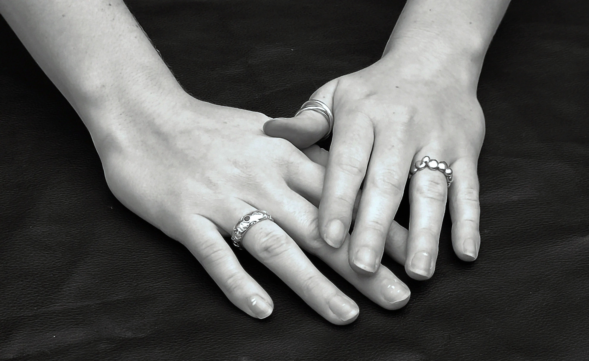
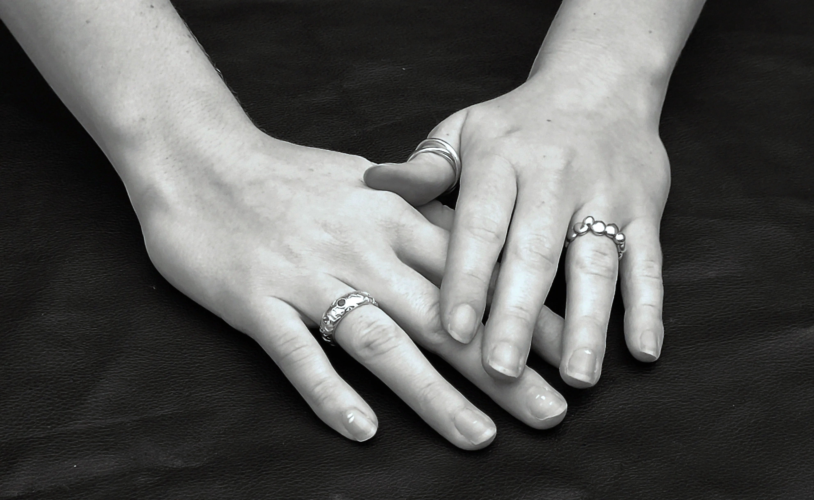

Denne side indeholder en video og forskellige billeder fra et interview med Clara, som studerer Smykker, Teknologi og Business på KEA. Det er udarbejdet under et 2-og-2 gruppeprojekt, hvor opgaverne var opdelt. Jeg har primært optaget video med DJI Mimo kameraet og min mobil, hvorefter jeg har redigeret videoen ved brug af klipning, farvekorrektion og lydjustering. Det var et nyt område for mig, og det var en spændende udfordring at skabe en kort sammenhængende video baseret på et interview.
 



Clara, 23 år og fra Danmark, skaber sit eget unikke fodspor inden for smykkekunsten ved at forene kunst og teknologi. Hun studerer i øjeblikket "Smykker, Teknologi og Business" på Københavns Erhvervsakademi, hvor hendes fokus ligger på smykkers kvalitet og følelsesmæssige værdi snarere end masseproduktion og forretningsaspekterne. Claras passion udfolder sig i værkstedet, hvor hun med omhu kombinerer håndværksmæssige færdigheder med avanceret teknologi som 3D-print for at give liv til hendes fantasifulde designs. Mens hun følger med i smykketrends, forbliver Clara dedikeret til at udfordre grænserne for smykkedesign og skabe unikke værker, der afspejler både dygtighed og nutidig æstetik.